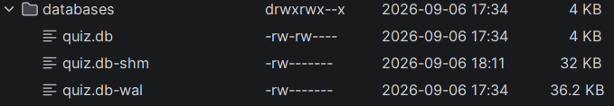

Modul 335 Mobile Applikationen, Tag 4 Vormittag. Arbeitszeit 90 Minuten. Version 7 vom 06.09.2026.
Du gibst deiner App eine lokale Datenbank. Fertig bist du, wenn die leere Tabelle questions mit neun Spalten dasteht und im Logcat unter tag:Modul335 die Zeile database opened, name=quiz.db, questions=0 erscheint. Warum das so geht, steht in der Einführung zu 07C.
| Baustein | Wofür |
|---|---|
| annotationProcessor | Neu. Ein Programm, das beim Bauen Java-Code schreibt |
| @Entity(tableName = "...") | Neu. Aus dieser Klasse wird eine Tabelle |
| @PrimaryKey(autoGenerate = true) | Neu. Die Nummer der Zeile, von der Datenbank vergeben |
| @ColumnInfo(name = "...") | Neu. Der Name der Spalte |
| data/QuestionEntity | Die Frage als Tabellenzeile, Vorlage model/Question |
| questions | Der vorgegebene Tabellenname |
A1Die Abhängigkeit eintragen. 10 Min
Room gehört nicht zu Android. Der RecyclerView aus 06C kam als Beigabe mit, Room trägst du selbst ein.
| Datei | Was dort steht |
|---|---|
gradle/libs.versions.toml | Der Katalog. Welche Bibliothek es in welcher Version gibt |
app/build.gradle.kts | Die Bestellung. Welche davon dieses Modul benutzt |
Beide stehen unter Gradle Scripts. Zuerst der Katalog, unten im Abschnitt [versions]:
room = "2.8.4"
Dann, unten im Abschnitt [libraries]:
room-runtime = { group = "androidx.room", name = "room-runtime", version.ref = "room" }
room-compiler = { group = "androidx.room", name = "room-compiler", version.ref = "room" }
Es gibt zwei Dateien namens build.gradle.kts, direkt untereinander. Die mit (Project: WissQuiz) wird nicht angefasst. Die mit (Module :app) ist die längere und enthält den Block dependencies. Fehlt der Block, hast du die falsche offen.
In app/build.gradle.kts, im Block dependencies, zu den anderen Zeilen dazu:
implementation(libs.room.runtime) annotationProcessor(libs.room.compiler)
Die erste Zeile bringt Room in deine App, die zweite den Code-Schreiber. Aus dem Bindestrich wird dabei ein Punkt, wie bei activity-ktx in deinem Projekt.
Oben rechts erscheint ein Balken mit Sync Now. Klick ihn an. Beim ersten Mal dauert es, denn Room wird heruntergeladen.
A2Aus Question wird QuestionEntity. 16 Min
Deine Klasse model/Question.java hat fast alles, was eine Tabellenzeile braucht. Rechtsklick, Copy, dann Rechtsklick auf das Paket data und Paste, als Namen QuestionEntity. Question.java bleibt unverändert liegen.
Leg dein Blatt aus 06A daneben. Die Felder von dort sind deine Spalten, der Schlüssel ist die id. In der Kopie änderst du sechs Dinge.
| Nr | Aus | Wird |
|---|---|---|
| 1 | package ch.wiss.m335.quiz.model; | package ch.wiss.m335.quiz.data;, von Android Studio erledigt |
| 2 | Der Klassenkommentar von Question | Ein eigener. Der kopierte ist ab jetzt falsch |
| 3 | kein id-Feld | Ein Feld id mit @PrimaryKey(autoGenerate = true) |
| 4 | private String[] answers; | Vier Felder answer1 bis answer4 |
| 5 | Der Konstruktor mit fünf Werten | Weg. Dafür ein Setter pro Feld |
| 6 | An jedem Feld nichts | @ColumnInfo(name = "...") und @NonNull |
Die Klassenzeile mit der Annotation darüber:
@Entity(tableName = "questions") public class QuestionEntity {
Die Felder. Sie ersetzen den ganzen bisherigen Feldblock:
/** Die Nummer der Zeile. Room vergibt sie beim Einfügen selbst. */ @PrimaryKey(autoGenerate = true) private int id; /** Der Fragetext. */ @NonNull @ColumnInfo(name = "text") private String text = ""; /** Erste Antwortmöglichkeit. */ @NonNull @ColumnInfo(name = "answer1") private String answer1 = "";
Nach demselben Muster folgen answer2 bis answer4. Dann die letzten drei:
| Feld | Name in @ColumnInfo | Startwert |
|---|---|---|
| correctAnswer | correct_answer | "" |
| category | category | "" |
| difficulty | difficulty | "leicht" |
Vier Antwortspalten statt einem Array, weil eine Spalte einen Wert hält. Die id ist ein int. Feld, Getter und Setter müssen denselben Typ tragen, sonst findet Room den Getter nicht.
Das @NonNull gehört an das Feld und an den Parameter des Setters, nicht an den Getter. Am Feld wird daraus ein NOT NULL in der Tabelle.
Der Konstruktor fliegt raus. Room baut die Objekte selbst und braucht einen leeren, und den bekommst du geschenkt, sobald kein anderer dasteht.
Die Methode getAnswers bleibt, aber sie baut das Array jetzt selbst zusammen:
public String[] getAnswers() { return new String[]{answer1, answer2, answer3, answer4}; }
Zum Schluss die Setter. Die tippst du nicht: Alt+Insert, Getter and Setter, alle neun Felder. Fünf Getter kamen mit der Kopie mit, getAnswer1 bis getAnswer4 und getId fehlen.
Die erzeugten Setter haben kein Javadoc, und das Prüfungsblatt verlangt eines. Eine Zeile pro Setter genügt, etwa /** @param text der Fragetext */.
So prüfst du Teil A.
import androidx.room. und schau, ob die Vorschlagsliste Entity und Dao anbietet. Danach die Zeile löschen.data, und es gibt keinen Konstruktor mit Werten mehr.int id gehört zu int getId(), der Rest ist String.correctAnswer heisst die Spalte correct_answer. Ihr Fehlen macht als einzige der sechs Änderungen nichts kaputt.Question.| Baustein | Wofür |
|---|---|
| @Dao | Neu. Data Access Object, das Interface mit den Zugriffen |
| @Insert, @Update, @Delete | Neu. Drei Grundoperationen, ohne SQL |
| @Query("...") | Neu. Die vierte und alles Weitere, hier mit SQL |
| SELECT, COUNT(*), ORDER BY, WHERE | Aus 295. Dasselbe SQL, anderer Ort |
| data/QuestionDao | Deine neue Datei, sechs Zugriffe |
| Ctrl+F9 | Bauen ohne Starten, deine häufigste Rückmeldung |
B1Anlegen, lesen, zählen. 15 Min
Rechtsklick auf data, dann New und Java Class. Als Name QuestionDao, und in der Liste darunter Interface statt Class. Der Dialog steht auf Class voreingestellt.
@Dao public interface QuestionDao {
Die erste, anlegen:
/** * Legt eine neue Frage an. * * @param question die neue Frage * @return die id, die Room vergeben hat */ @Insert long insert(QuestionEntity question);
Kein Rumpf, nur ein Strichpunkt. Kein SQL, denn bei @Insert, @Update und @Delete kennt Room deine Tabelle aus @Entity. Und der Rückgabewert ist long, die vergebene Nummer.
Die zweite, alle lesen:
/** * Liefert alle Fragen, nach Kategorie und dann nach id sortiert. * * Die Sortierung steht im SQL und nicht in Java. * * @return alle Fragen, nie null */ @Query("SELECT * FROM questions ORDER BY category, id") List<QuestionEntity> getAll();
Die dritte, zählen. Sie ist die einzige, die in 07C wirklich läuft:
/** * Zählt alle Fragen. * * @return Anzahl Fragen in der Tabelle */ @Query("SELECT COUNT(*) FROM questions") int count();
Hier steht SQL als Text in Anführungszeichen. Einen Tippfehler in einem Text merkt sonst niemand, Room schon: room-compiler vergleicht deinen Text mit deiner Tabelle. Schreibst du FROM question ohne s, gibt es beim Bauen den Fehler no such table. Nicht erst beim Start. Das probierst du in Übung 1a aus.
Gebaut wird mit Ctrl+F9, ohne die App auf den Emulator zu schieben. Im Menü Build ist es der oberste Eintrag, dessen Name zwischen den Versionen wechselt. Die Tastenkombination nie.
B2Ändern, löschen, einzeln holen. 11 Min
Drei Methoden fehlen noch. Keine davon wird in 07C aufgerufen, und trotzdem schreibst du sie jetzt.
/** * Speichert Änderungen an einer bestehenden Frage. * * Room erkennt die Frage an ihrer id. Ist die id 0, passiert nichts. * * @param question die geänderte Frage, inklusive ihrer id */ @Update void update(QuestionEntity question);
/** * Löscht eine Frage. * * Auch hier zählt nur die id. Die anderen Felder darf Room ignorieren. * * @param question die zu löschende Frage */ @Delete void delete(QuestionEntity question);
/** * Liefert eine einzelne Frage, zum Beispiel für ein Formular. * * @param id die Nummer der Frage * @return die Frage, oder null wenn es sie nicht gibt */ @Query("SELECT * FROM questions WHERE id = :id") QuestionEntity findById(int id);
Der Doppelpunkt in :id sagt Room: hier kommt der Wert des gleichnamigen Parameters hinein, und Room prüft beim Bauen, ob es ihn gibt. Schreib den Wert nie selbst in den Text. Das ist die Tür, durch die SQL-Injection kommt.
Sonst gilt im Kurs: schreib nichts, was niemand aufruft. Ein Dao ist die Ausnahme, denn es ist kein Ablauf, sondern ein Vertrag mit der Tabelle. Die vier Grundoperationen gehören zusammen.
So prüfst du Teil B.
public interface, und keine Methode hat geschweifte Klammern.@Insert, @Update oder @Delete ohne SQL, drei tragen @Query mit SQL.@param und, wo nötig, @return.| Baustein | Wofür |
|---|---|
| @Database(entities = {...}) | Neu. Welche Tabellen und welche Version |
| Room.databaseBuilder(...) | Neu. Baut oder öffnet die Datenbank |
| allowMainThreadQueries() | Neu. Abfragen im Haupt-Thread, Begründung in C1 |
| synchronized | Neu hier. Nur einer darf gleichzeitig hinein |
| quiz.db | Der Dateiname, als Konstante DB_NAME. Dein Beleg dazu ist ein Log.d |
| getInstance | Der einzige Weg zur Datenbank |
C1Die Klasse QuizDatabase. 16 Min
Rechtsklick auf data, New und Java Class, Name QuizDatabase, diesmal als Class.
@Database(entities = {QuestionEntity.class}, version = 1, exportSchema = false) public abstract class QuizDatabase extends RoomDatabase { /** Log-Tag für das ganze Modul 335. */ private static final String TAG = "Modul335"; /** Der Dateiname der Datenbank auf dem Gerät. */ private static final String DB_NAME = "quiz.db"; /** Die eine Datenbank. Wird beim ersten Zugriff gebaut. */ private static QuizDatabase instance; }
entities zählt die Tabellen auf, bei uns eine. version zählt man hoch, wenn später eine Spalte dazukommt, und exportSchema = false unterdrückt eine Warnung.
Als erste Methode die abstrakte fürs Dao:
/** * Der Zugriff auf die Tabelle questions. * * Auch sie ist abstract. Room baut sie selbst. * * @return das Dao, über das alle Abfragen laufen */ public abstract QuestionDao questionDao();
Als zweite die, über die alle an die Datenbank kommen:
/** * Liefert die Datenbank und baut sie beim ersten Aufruf. * * @param context irgendein Context, zum Beispiel eine Activity * @return die eine Datenbank der App */ public static synchronized QuizDatabase getInstance(Context context) { if (instance == null) { Context appContext = context.getApplicationContext(); instance = Room.databaseBuilder(appContext, QuizDatabase.class, DB_NAME) .allowMainThreadQueries() .build(); // build() legt die Datei noch nicht an. Das passiert erst beim // ersten Zugriff, also bei count() gleich hier darunter. Log.d(TAG, "database opened, name=" + DB_NAME + ", questions=" + instance.questionDao().count()); } return instance; }
Das getApplicationContext() ist Pflicht. Eine Activity verschwindet laufend, unter anderem bei jedem Drehen, die Datenbank lebt so lange wie die App. Hältst du hier die Activity fest, kommt sie nie wieder weg, denn instance ist statisch.
Das synchronized lässt nur einen gleichzeitig hinein. Sonst sehen zwei Stellen zugleich, dass instance noch null ist, und beide bauen eine Datenbank.
Bau danach mit Ctrl+F9. Das dauert länger als sonst, denn der Annotation Processor läuft zum ersten Mal richtig. Drück zweimal Shift und tipp QuizDatabase_Impl. Die Datei gibt es jetzt. Such darin CREATE TABLE: dort stehen deine neun Spalten in SQL, abgeleitet aus deiner QuestionEntity.
Das allowMainThreadQueries() ist eine bewusste Entscheidung. Room verbietet Abfragen im Haupt-Thread, weil der den Bildschirm zeichnet. Die Rechnung für uns: dreissig Zeilen, eine Abfrage weit unter einer Millisekunde, gezeichnet wird alle sechzehn. Bei vielen Daten machst du es anders. Du nimmst also die einfache Lösung und kannst sie begründen, und genau das verlangt die Zeile "Persistenz-Methoden dokumentiert und begründet".
C2Öffnen, zählen, hineinschauen. 11 Min
Deine Datenbank existiert als Code, und niemand hat sie je aufgerufen. In MainActivity.onCreate, vor der letzten Log.d-Zeile:
// Öffnet die Datenbank ein einziges Mal beim Start der App. Die // Meldung dazu schreibt QuizDatabase selbst. QuizDatabase.getInstance(this);
Den Import holst du mit Alt+Enter.
Bevor du startest, leg dich fest. Du hast nirgends ein CREATE TABLE ausgeführt, auf dem Gerät gibt es keine Datei. Was passiert beim count()? Ein Absturz mit no such table, die Zahl 0 oder die Zahl -1? Dann starte und schau im Logcat nach.
Es ist die Zahl 0. Das build() hat nur vorbereitet. Erst dein count() greift zu, und da merkt Room, dass es quiz.db noch nicht gibt. Also legt es die Datei an, führt das CREATE TABLE aus und zählt. Deine Tabelle entsteht beim ersten Zugriff.
Jetzt schaust du sie an, bei laufender App. Öffne den Database Inspector unter View, Tool Windows, App Inspection. Im Baum steht dein Gerät, darunter quiz.db, darunter questions. Klapp die Tabelle auf, statt sie zu öffnen. Der Doppelklick zeigt den leeren Inhalt, der Baum die Spalten.
quiz.db SQLiteDatabase
questions
id : INTEGER, NOT NULL
text : TEXT, NOT NULL
answer1 ... answer4
correct_answer : TEXT, NOT NULL
category : TEXT, NOT NULL
difficulty : TEXT, NOT NULL
room_master_table
Jede Angabe darin hast du verursacht: der Tabellenname aus tableName, die Typen aus deinen Feldtypen, das NOT NULL aus @NonNull. Und correct_answer ist der einzige Ort, an dem dein @ColumnInfo sichtbar wird.
Findest du den Database Inspector nicht, ist der Auftrag trotzdem erfüllt. Er wandert von Version zu Version. Der Logcat genügt dann.
Die Datei selbst liegt im Device Explorer, unter View, Tool Windows, Device Explorer. Der Pfad ist /data/data/ch.wiss.m335.quiz/databases/.

quiz.db ist die Datenbank mit deiner Tabelle. quiz.db-wal hält fest, was geschrieben, aber noch nicht in die Hauptdatei übertragen ist, und quiz.db-shm ist die Hilfsdatei dazu. Die zwei legt SQLite selbst an. Du fasst sie nie an, und du kopierst nie nur die Hauptdatei allein.So prüfst du Teil C, und das ist zugleich die Prüfung des ganzen Auftrags.
tag:Modul335 steht database opened, name=quiz.db, questions=0.if (instance == null). Kommt sie mehrmals, steht dein Log.d ausserhalb.questions=0. Spiel eine Runde, alles läuft wie vorher.questions aufgeklappt, und du findest jeden Spaltennamen in deiner QuestionEntity wieder.id steht INTEGER, sonst TEXT, und überall NOT NULL. Fehlt es bei einer Spalte, fehlt dort das @NonNull am Feld.C3Javadoc und Kommentare nachziehen. 5 Min
Auf dem Prüfungsblatt der Leistungsbeurteilung steht: "Alle selbst erstellten Klassen und Methoden sind Javadoc-kompatibel zu dokumentieren." Geh die drei Klassen durch.
| Klasse | Was ein Kommentar braucht |
|---|---|
QuestionEntity | Klassenkommentar, neun Felder, alle Getter und Setter, getAnswers, isCorrect |
QuestionDao | Klassenkommentar und alle sechs Methoden |
QuizDatabase | Klassenkommentar, drei Felder, questionDao(), getInstance |
Dann eine Suche im Projekt, denn ein Kommentar veraltet still. Stufe 7 steht im Klassenkommentar von QuestionBank und stimmt nicht mehr. Und die MainActivity öffnet ab jetzt die Datenbank, das gehört in ihren Kommentar.
QuestionBank darf noch nicht sagen, die Fragen lägen in der Datenbank. Die Tabelle ist leer, das Spiel holt sie weiterhin von hier. Schreib hin, was stimmt: es gibt jetzt eine Datenbank, und der Umzug beginnt in 08A.
Zum Schluss zwei Fragen an deinen eigenen Text. Steht im Klassenkommentar von QuizDatabase, warum es die Klasse nur einmal gibt? Und liefert die Suche nach Stufe 7 keinen falschen Treffer mehr?
Freiwillig, daheim. Bei Übung 3 steht ein Prompt dabei, wenn du mit einer KI arbeiten willst.
Bei den ersten drei machst du etwas kaputt und stellst es zurück. Notier dir vorher, was du erwartest.
Ändere in QuestionDao im @Query von getAll das Wort questions auf question, also ohne s. Dann Ctrl+F9. Stell es danach zurück.
So prüfst du: Schreib auf, wann du den Fehler bekommen hast und was dort stand. Und wann du ihn bekommen hättest, wenn das SQL erst beim Start geprüft würde.
Nimm bei correctAnswer die Zeile @ColumnInfo weg. Bau neu, öffne QuizDatabase_Impl und such das CREATE TABLE. Stell es danach zurück.
So prüfst du: Wie heisst die Spalte jetzt? Schreib auf, warum kein Werkzeug das meldet und wann es trotzdem teuer wird.
Nimm in getInstance das .allowMainThreadQueries() weg und starte die App. Stell es danach zurück.
So prüfst du: Die App stürzt beim Start ab. Lies im Logcat den ganzen Satz bei IllegalStateException. Schreib auf, was Room dir sagen will und warum wir es trotzdem erlaubt haben.
Erklär in zwei Sätzen, warum QuestionDao ein Interface ohne Rümpfe ist und trotzdem funktioniert.
Rolle: Du bist Mitlernender und hast Room noch nie gesehen. Ich bin Lernender und erkläre dir etwas. Ablauf: 1. Ich schicke dir meine Erklärung in zwei Sätzen. 2. Du sagst mir in einem Satz, was du davon verstanden hast, und stellst genau eine Rückfrage zu dem, was offen bleibt. 3. Ich bessere nach, du fragst wieder. Regeln: Du erklärst mir nichts und ergänzt nichts aus deinem eigenen Wissen. Du fragst nur. Ziel: Der Auftrag ist zu Ende, wenn du sagen kannst, wann der fehlende Code entsteht und wer ihn schreibt.
Zuerst die Pflichtaufgabe fertig und lauffähig. Dann zwei weitere Methoden ins QuestionDao, mit @Query und Javadoc. countByCategory(String category) zählt die Fragen einer Kategorie, getRandom(int limit) liefert eine zufällige Auswahl mit ORDER BY RANDOM() LIMIT :limit.
So prüfst du: Ctrl+F9. Läuft es durch, ist dein SQL richtig, sonst sagt dir Room, was nicht stimmt. Du bekommst also eine Rückmeldung, ohne einen einzigen Datensatz zu haben. Dann der Gegenversuch: schreib absichtlich categorie statt category, bau nochmals und lies die Meldung. Keine Musterlösung, aber du musst deine Abfrage erklären können.
| Symptom | Wahrscheinliche Ursache | Was du machst |
|---|---|---|
Sync schlägt fehl, Could not find androidx.room:room-runtime | Katalog und Bestellung passen nicht zusammen | Aus room-runtime wird libs.room.runtime. Siehe A1 |
| Der Sync läuft durch, und Room ist trotzdem unbekannt | Die zwei Zeilen stehen in der Datei mit (Project: WissQuiz) | In die mit (Module :app) verschieben. Siehe A1 |
QuizDatabase_Impl does not exist | Die Zeile annotationProcessor fehlt | Es braucht beide Zeilen. Siehe A1 |
Entities and Pojos must have a usable public constructor | Der Konstruktor mit fünf Werten steht noch da | Löschen, den leeren bekommst du automatisch. Siehe A2 |
Cannot find getter for property | Ein Getter fehlt, oder sein Rückgabetyp passt nicht zum Feld | Neun Felder, neun Getter. getId() liefert int. Siehe A2 |
Cannot figure out how to save this field into database | Ein Feld ist noch ein String[] | Vier Felder answer1 bis answer4. Siehe A2 |
no such table: questions | tableName und die Tabelle im @Query sind verschieden geschrieben | Beide auf questions, der Name ist vorgegeben |
| Eine Klasse liegt im falschen Paket | Beim Anlegen falsch gewählt | Alle drei gehören ins Paket data, mit den vorgegebenen Namen |
Absturz beim Start, Cannot access database on the main thread | allowMainThreadQueries() fehlt | Ergänzen. Das probierst du in Übung 2 aus |
| Im Logcat steht gar nichts | Der Aufruf QuizDatabase.getInstance(this) fehlt in MainActivity.onCreate | Ergänzen. Dieser Fehler meldet sich nirgends. Siehe C2 |
| Ein langer roter Stacktrace, und du hast nichts geändert | Er kommt vom Emulator | Steht in der ersten at-Zeile com.android.server, ignorier ihn |
Die App sieht aus wie vorher, fünf Dao-Methoden sind grau, im Logcat steht questions=0 | Alles kein Fehler | Nichts tun. Das ist das erwartete Ergebnis |
Modul 335 | Tag 4 Vormittag | Auftrag 07C | Version 7 | 06.09.2026